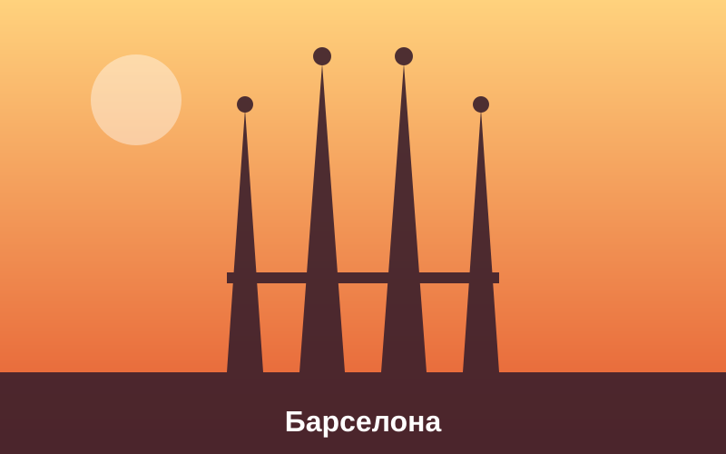
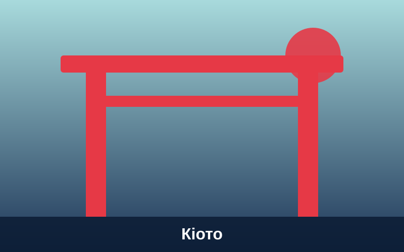
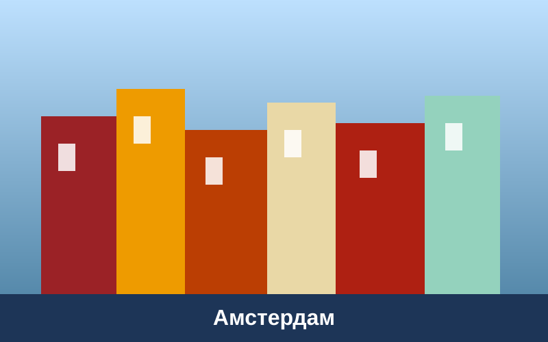

Наші топ-3 міста світу
-

🇪🇸 Барселона — Місто, де мозаїка живе на кожній лавці, а вечори пахнуть морем. -

🇯🇵 Кіото — Тиша храмів, чайні будиночки та тисяча брам на схилі гори. -

🇳🇱 Амстердам — Канали, мости й велосипеди, що дзвенять із ранку до ночі.
Про блог
«Global Adventures Blog» — це щоденник трьох друзів, які люблять їздити на потязі, заблукати в незнайомому місті й розповідати про це вдома. Ми записуємо пам'ятки, смаки, традиції та історії. Обирай місто в меню або переходь до галереї.